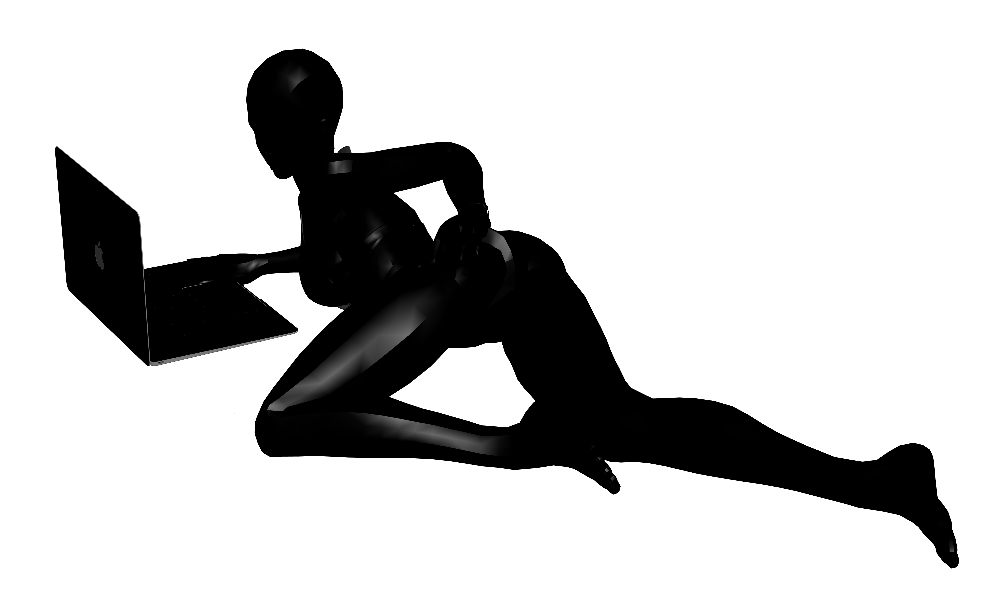

REALITY IS A BURSTING KALEIDOSCOPIC ENERGY I MANDALA. A SINGULARITY EXPLODES INTO MORPHING drifting cosmic fireworks with detail approaching the edge of infinity. A lightshow from the edge of the universe down to each unique electron, and in due time the ETA will prove itself to be home to another infinitity of cosmic fireworks bursting within it. As humans we act as a minuscule portion of this lightshow, yet at the purest most fundamental level, we are gifted to bear concious witness to it. 5 to interact with this external world and an internal world to interpret it. We'll watch and observe and learn and pass the time. To appreciate beauty and natural law. Bathing in soft intangible feelings. To feel pretty and vain as a part and a witness to a bursting firework. Superficial beauty is real beauty. Superficial beauty shows you something and tells you nothing and allows you to react and feel something on your own terms. Superficial beauty provokes pleasure in feeling. LOTUS® forgets the functioning world and lives parallel with the superficial beauty of dreaming. LOTUS deconstructs and reconstructs. presents is built to inspire your imagination with nothing more than superficial beauty. There is no meaning. Indulge in the art of being alive in an infinitely detailed world. It feels good to study. It feels good to breathe.